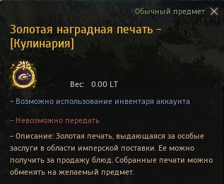

Для того, щоб упаковувати по 10 паків за раз - необхідно пройти завдання у
Кароліни.
Щоб отримати завдання
необхідно мати виготовлення на рівні Мастер 1
або вище.
Для того щоб виконати завдання необхідно показати 500 золотих печаток кулінарії або алхімії


Після виконання завдання, ви зможете отримати знання.
Для того щоб отримати знання упаковки по 10 шт, вам необхідно в 10 раз більше матеріалів та мотузка для массової упаковки.
Мотузку ви можете отримати у продавця